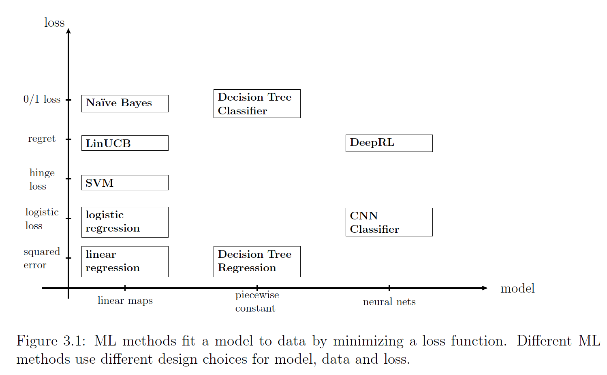

Alexander Jung
|
About me
I have received a Dipl.-Ing. (MSc) and Dr.techn. (Phd) degree in electrical engineering and signal processing from TU Vienna in 2008 and 2012, respectively. Since 2015, I am an Assistant Professor for Machine Learning at the Department of Computer Science of Aalto University. I am leading the research group Machine Learning for Big Data which is researching and teaching the mathematical foundations of machine learning.
NEWS
New preprint on “Towards Model-Agnostic Federated Learning over Networks” available. click me
My brand-new course CS-E4740 Federated Learning will roll out end of February 2023. The course will be offered at Aalto university and to adult learners via the The Finnish Institute of Technology (FiTech)
Our course CS-EJ3211 Machine Learning with Python was among the best large Computer-Science courses at Aalto University during 2022. certificate
Research Highlight: Computational and Statistical Aspects of Total Variation Minimization for Federated Learning
 Many important application domains generate collections of local datasets that are
related by an intrinsic network structure (“big data over networks”). A timely application domain that generates such big data over networks
is the management of pandemics. Individuals generate local datasets via their smartphones and wearables that measure biophysical
parameters. The statistical properties of local datasets are related via different network structures that reflect physical (“contact networks”),
social or biological proximity. In general, local datasets are heterogeneous in the sense of having different statistical distributions.
However, we can often approximate local datasets that form a tight-knit cluster by a common cluster-specific distribution.
Many important application domains generate collections of local datasets that are
related by an intrinsic network structure (“big data over networks”). A timely application domain that generates such big data over networks
is the management of pandemics. Individuals generate local datasets via their smartphones and wearables that measure biophysical
parameters. The statistical properties of local datasets are related via different network structures that reflect physical (“contact networks”),
social or biological proximity. In general, local datasets are heterogeneous in the sense of having different statistical distributions.
However, we can often approximate local datasets that form a tight-knit cluster by a common cluster-specific distribution.
To capitalize on the information in local datasets and their network structure, we have recently proposed networked exponential families as a novel probabilistic model for big data over networks. Networked exponential families are appealing statistically and computationally. They allow us to adaptively pool local datasets with similar statistical properties as training sets to learn personalized predictions tailored to each local dataset. We can compute these personalized predictions using highly scalable distributed convex optimization methods. These methods are robust against various types of imperfections (statistically and computationally) and typically offer a high level of privacy protection.
Relevant Publications:
A. Jung, “On the Duality Between Network Flows and Network Lasso,” in IEEE Signal Processing Letters, vol. 27, pp. 940-944, 2020, doi: 10.1109/LSP.2020.2998400.
A. Jung, “Networked Exponential Families for Big Data Over Networks,” in IEEE Access, vol. 8, pp. 202897-202909, 2020, doi: 10.1109/ACCESS.2020.3033817.
A. Jung, A. O. Hero, III, A. C. Mara, S. Jahromi, A. Heimowitz and Y. C. Eldar, “Semi-Supervised Learning in Network-Structured Data via Total Variation Minimization,” in IEEE Transactions on Signal Processing, vol. 67, no. 24, pp. 6256-6269, Dec., 2019, doi: 10.1109/TSP.2019.2953593.
A. Jung and N. Tran, “Localized Linear Regression in Networked Data,” in IEEE Signal Processing Letters, vol. 26, no. 7, pp. 1090-1094, July 2019, doi: 10.1109/LSP.2019.2918933.
Research Highlight: Personalized Explainable Machine Learning
A key challenge for the widespread use of machine learning methods is the explainability of their predictions. We have recently developed a novel approach to constructing personalized explanations for the predictions delivered by machine learning method. We measure the effect of an explanation by the reduction in the conditional entropy of the prediction given the summary that a particular user associates with data points. The user summary is used to characterise the background knowledge of the “explainee” in order to compute explanations that are tailored for her. To compute the explanations our method only requires some training samples that consists of data points and their corresponding predictions and user summaries. Thus, our method is model agnostic and can be used to compute explanations for different machine learning methods.
Relevant Publications:
A. Jung, “Explainable Empirical Risk Minimization”, arXiv eprint, 2020. weblink
A. Jung and P. H. J. Nardelli, “An Information-Theoretic Approach to Personalized Explainable Machine Learning,” in IEEE Signal Processing Letters, vol. 27, pp. 825-829, 2020, doi: 10.1109/LSP.2020.2993176.
Teaching Highlight: Student Feedback-Driven Course Development
 Right from my start at Aalto in 2015, I took care of the main machine
learning courses at Aalto University. Within three years I have re-designed the spearhead course Machine Learning: Basic Principles (MLBP).
This re-design was based on a careful analysis of feedback received from several thousands of students. I have also started to
prepare response letters to the student feedback, as it is customary in the
review process of scientific journals. My final edition of MLBP in 2018 has achieved the best student rating since the course was
established at Aalto. The efforts have also been acknowledged by the Teacher of the Year
award, which I have received in 2018 from the Department of Computer Science at Aalto University.
Right from my start at Aalto in 2015, I took care of the main machine
learning courses at Aalto University. Within three years I have re-designed the spearhead course Machine Learning: Basic Principles (MLBP).
This re-design was based on a careful analysis of feedback received from several thousands of students. I have also started to
prepare response letters to the student feedback, as it is customary in the
review process of scientific journals. My final edition of MLBP in 2018 has achieved the best student rating since the course was
established at Aalto. The efforts have also been acknowledged by the Teacher of the Year
award, which I have received in 2018 from the Department of Computer Science at Aalto University.
Teaching Highlight: A Three-Component Picture of Machine Learning
Machine learning methods have been and are currently popularized in virtually any field of science and technology. As a result, machine learning courses attract students from different study programs. Thus, a key challenge in teaching basic machine learning courses is the heterogeneity of student backgrounds. To cope with this challenge, I have developed a new teaching concept for machine learning. This teaching concept revolves around three main components of machine learning: data, models and loss functions. By decomposing every machine learning methods into specific design choices for data representation, model and loss function, students learn to navigate the vast landscape of machine learning methods and applications. The three-component picture of machine learning is the main subject of my textbook Machine Learning: The Basics.
